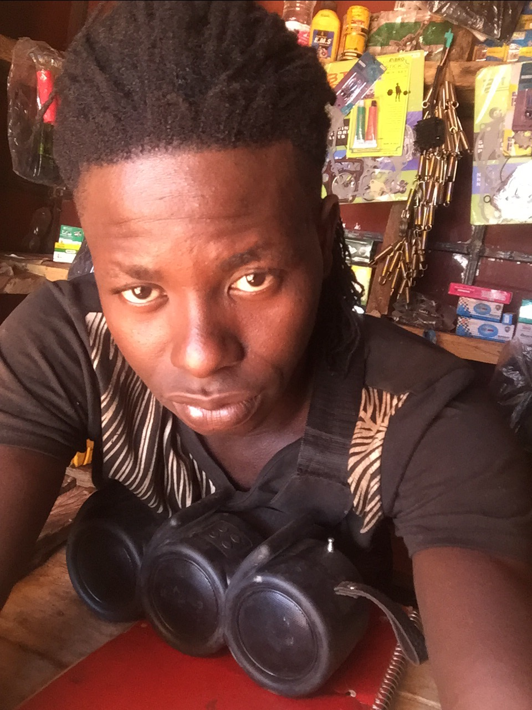

Diagnostic clair
Identifier le problème avant de remplacer une pièce.
À propos de l'atelier
Nous entretenons, réparons et conseillons les motards avec une approche simple : écouter, contrôler, expliquer, puis intervenir.
Notre travail
SAMA Réparation accompagne les conducteurs de motos Haojin, Djakarta, Apsonic et autres marques courantes. L'objectif est de garder votre moto fiable pour le travail, les déplacements et les trajets du quotidien.
Chaque intervention commence par un contrôle clair. Vous savez ce qui doit être fait, pourquoi c'est utile et comment entretenir votre moto ensuite.

Nos engagements
Identifier le problème avant de remplacer une pièce.
Expliquer les gestes d'entretien adaptés à votre moto.
Contrôler les freins, pneus, chaîne et éclairage avec attention.
Proposer les pièces et accessoires essentiels pour rouler mieux.
Contact
Nous vous accueillons du lundi au samedi pour les réparations, les contrôles et les conseils.